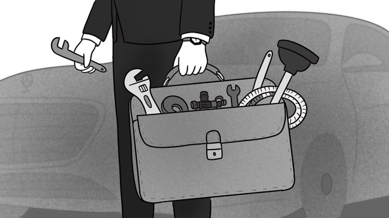
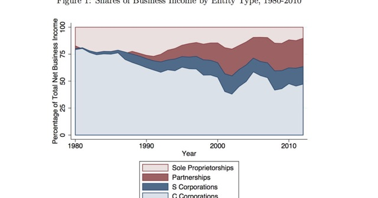

Selected Media Coverage
The Everywhere Millionaire
The New York Times
The Rich People Democrats Aren’t Talking About
October 2026
The New Yorker
The Wealthiest—and Stealthiest—Class in America
September 2026
NPR Planet Money
The powerful millionaires hiding in plain sight
September 2026
The Economist
American capitalism is run by millionaires, not billionaires
June 2026
Bloomberg Odd Lots podcast
There’s a Mind-Boggling Number of Rich People in America
September 2026
CBS News
America has more millionaires than you think. Here’s how most of them got rich.
September 2026
The Guardian
Donald Trump doesn’t just love billionaires, he loves multimillionaires too
August 2026
Fortune
The American Dream isn’t what you think it is
September 2026
NPR Planet Money
Middlegarchs are the new Oligarchs
September 2026

No Mercy / No Malice
The 1% Next Door
September 2026
More reviews, features, and interviews are on the Book page.
Research
The New York Times
Trump’s Tax Cut Fueled Investment but Did Not Pay for Itself, Study Finds
March 2024
The Economist
Economists are rethinking the numbers on inequality
November 2019
The New York Times
The Rich Are Not Who We Think They Are. And Happiness Is Not What We Think It Is, Either.
May 2022
The New York Times
Big Businesses Are Cashing In on Trump’s Tax Cuts
December 2025
The Economist
Have the top 0.1% of Americans made out like bandits since 2000?
May 2020
Vox
Do we really live in an “age of inequality”?
January 2024
The New York Times
Are You Rich? Where Does Your Net Worth Rank in America?
August 2019
The Washington Post
Behind Closed Doors, Trump Eyes Second Round of Corporate Tax Cuts
January 2024
The Economist
Will Joe Biden’s proposed taxes on capital make America an outlier?
April 2021
The New York Times
What Did the Trump Tax Cuts Do? Nobody Really Knows.
January 2025

Los Angeles Times
Column: The 'pass-through' loophole in the Trump tax plan is a huge handout to the 1%
October 2017
Axios
New study finds company tax incentives don't spur economic growth
January 2020
The New York Times
A Business Tax Fight Erupts Over the ‘Haves’ and ‘Have-Mores’
November 2017
Marketplace
Despite a GOP-controlled Congress, tax reform might still be an uphill battle
December 2024
PBS NewsHour
How firms avoid U.S. tax codes through pass-through businesses
January 2016
The New York Times
Kansas Tried a Tax Plan Similar to Trump’s. It Failed.
October 2017